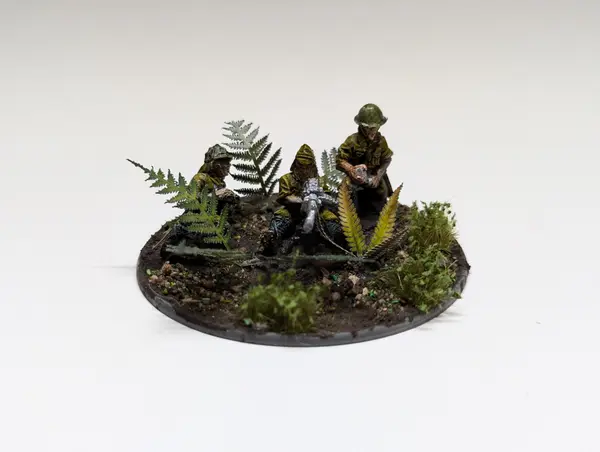

So I wanted to put up a post on the blog just showing off some pictures of the units I built and painted for the event I mentioned in my update post. Just a showcase is probably not terribly interesting though, so I'm going to talk about the methods and products I used as well.
I'm pretty proud of these, not because they are particularly good - but because I finished them. Before playing Bolt Action I had been playing Warhammer 40k sporadically, I had a lot of models most of them built and I even did some conversions, though nothing terribly elaborate, just using different weapon kits or merging two different units together. Here is a pic of my most fun one:
One thing is obvious though - they're not painted. Most of the models that I built were grey, or just had a base coat - only a small portion ended up close to table top ready. So this makes it my first ever completed army, and they're certainly the best looking things I've painted.
My preference really is Fantasy. Historical and SCIFI aren't really my bag, in movies, literature or games. I can make an exception for non-fantasy medieval because its close. But, a friend invited me to watch a game - and I knew some other friends who were already playing and whilst the subject matter doesn't really grab me, the game did look pretty fun. So I set about getting an army, but which one?
Well I like fantasy, and my 40k list was World Eaters so I like screaming and melee - why not pick the army who at least in this game is all about yelling BANZAI!!! and getting into melee. So I picked Japan, then the new rules came out and melee sucks...
Japan's whole shtick in V2 was about being tough, determined fighters who wouldn't give up and instead of surrendering would BANZAI charge. This made their cavalry units strong and a good stand in for medieval cavalry, their dismounted cavalry had extra bonus' to melee as well, a good stand in for knights. A man with a rifle might as well be an archer and finally the bamboo spearmen or militia for the peasant rabble. So I could play them like I'd play any army I'd choose to.
Well without going too far into the details, that all changed in V3. There are no more cavalry units for Japan, the special rules were nerfed and so was the whole combat system. Japan might still be some of the best fighters, but its a losing strategy. The unit selection will eventually get fixed when the full army book comes out (unfortunately in 2026) but I'm not a quitter so I dived in to some historical reports and literature to find out what a Imperial Japanese Army platoon would even look like.
Using the excellent Too Fat Lardies “Far East Handbook” for their army lists, the old V2 Japan Army Book and a textbook on the material “Rikugun: Guide To Japanese Ground Forces 1937-1945”. I constructed a fairly historical list based on the 1941 Mobilisation Plan. It's funny, in school I hated art and I hated history (I didn't like school much at all to be honest) but in this project I've found great joy in both.
I'm not a great painter or model builder, and as I tend to mention I'm time poor. That tends to come with being a parent to a young child. But there are great innovations in the hobby world that can let even me paint minis that look pretty good at arms reach, which is what matters.
Introducing Army Painter Speedpaints. Or Citadel Contrast Paints, or other similar products from other companies. These let you get a great looking mini in one coat of paint. Contrast paint does what the name implies, creates contrast by running into the recesses of a model and pulling away from high points, you can accentuate this effect by creating simple shadows and highlights in your priming step with a “Zenithal Prime” - simply prime the model in black or another dark colour, then prime again with a grey or white from above, then apply the contrast paint.
I followed this video guide for paint selection and it'll give you a good idea of the process. Here is a couple of progress shots through out the process:
Something which I thought I knew, but didn't really know until I'd actually done it, is what a difference actually finishing a model can make. By this I mean basing it, and its such a simple step. I put some texture paint down (which is just sand and paint upsold) then blobbed some PVA on the base and dipped it into a tupperware container of “basing material” (I used this from Geek Gaming Scenics). Stuck a few tufts on and some bigger “laser” plants, and voila instantly transformed miniatures from decent to pretty good. I'll leave you with the rest of the pictures of the army, thanks for reading and taking a look.
